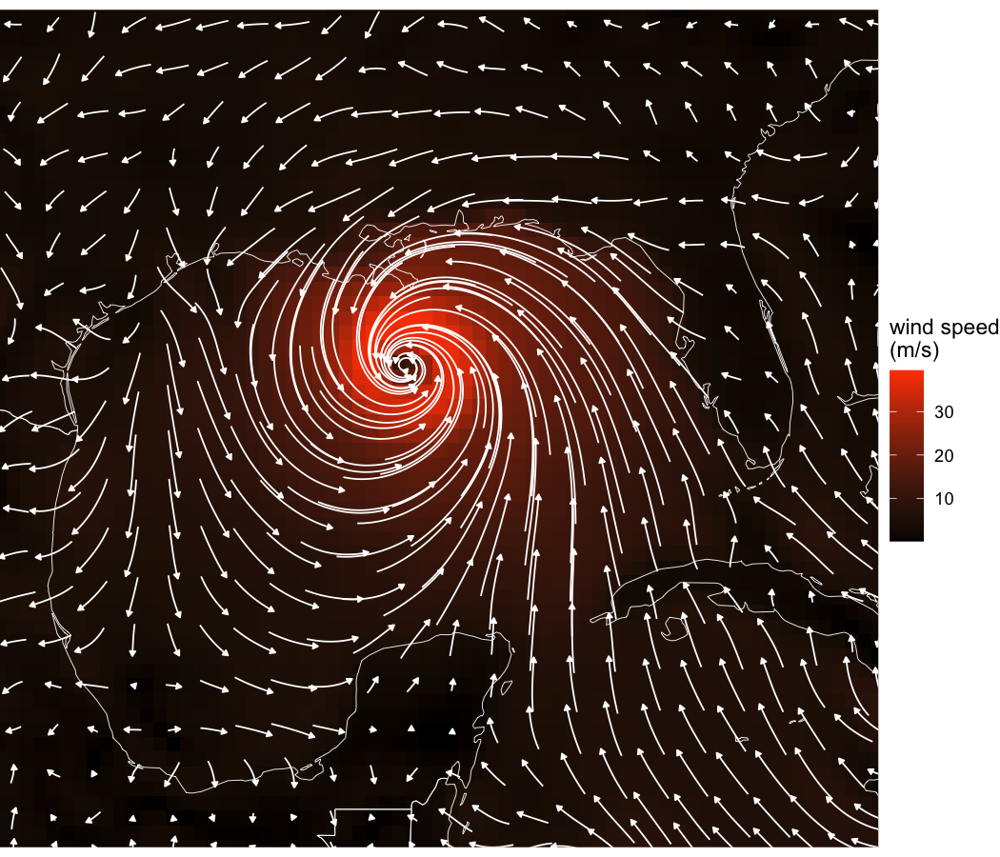
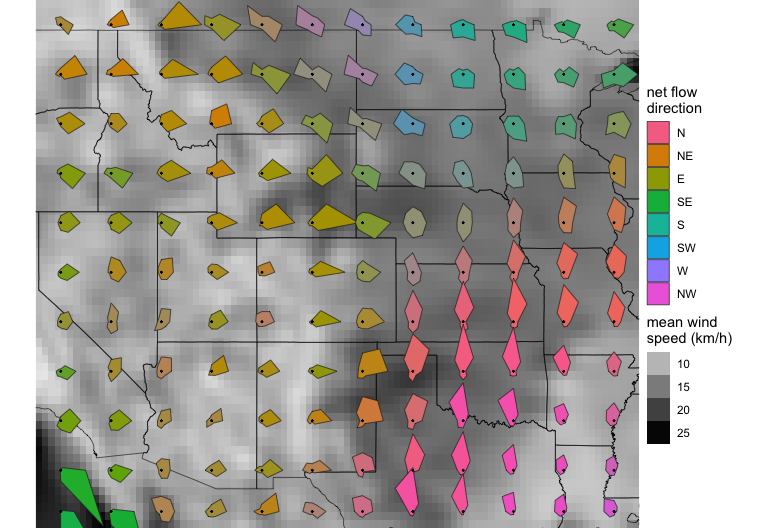
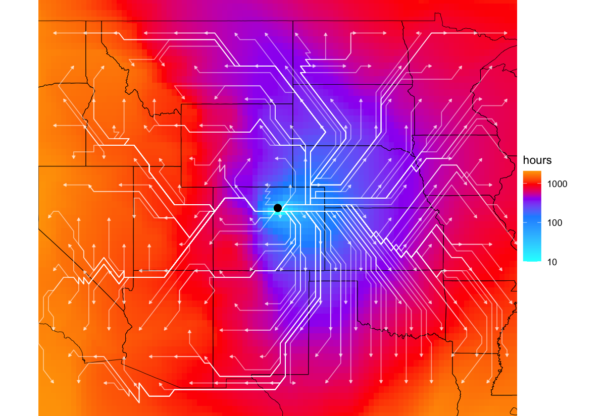
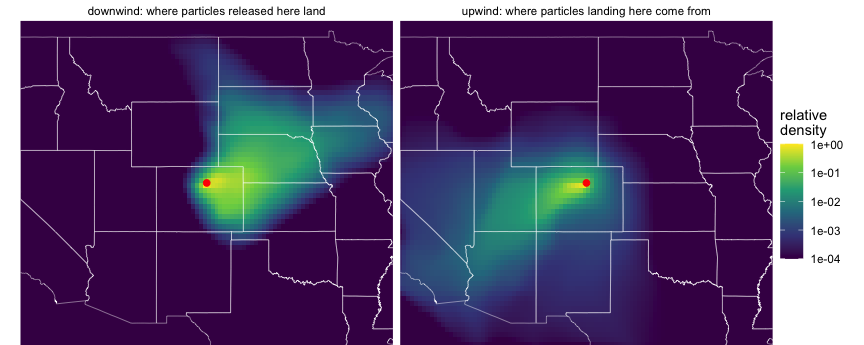

’
Because wind disperses particles ranging from pollen, seeds, and spores to insects, pathogens, and pollutants, wind patterns shape many aspects of spatial ecology. But the variation in wind strength and direction over space and time makes it challenging to study wind’s role in landscape connectivity. The windscape package provides a toolset for modeling the effects of time-integrated wind regimes in spatial ecology, landscape genetics, and related fields. Use it to:
- download and summarize wind data in the form of raster time series
- model windsheds representing a site’s upwind catchment and downwind deposition shadow, which often differ substantially
- model pairwise connectivity among sets of sites to generate asymmetric matrices of directional wind connectivity between site pairs using either least cost path or random walk approaches
- test statistical hypotheses about spatial relationships between wind and ecological outcomes
- visualize spatial wind patterns—including instantaneous wind fields, time-integrated wind regimes, and windsheds—in ggplot2
While windscape can be used to map air flow patterns at a single moment, its core connectivity models summarize long time series of wind data into wind regimes, describing the expected connectivity averaged over many dispersal events. It is thus designed for analyzing processes that accumulate over time, such as gene flow, colonization, and range expansion.
Installation
Install the development version from GitHub:
# install.packages("remotes")
remotes::install_github("matthewkling/windscape")Overview
| Task | Functions |
|---|---|
| Get wind data |
ncar_download(), ncar_land(), read_wind_series(), windscape_example()
|
| Summarize a wind regime |
wind_rose(), combine_roses(), weight_conductance(), downscale()
|
| Map windsheds |
least_cost_surface(), least_cost_paths(), random_walk(), ws_summarize()
|
| Connectivity among sites |
pairwise_least_cost(), pairwise_random_walk(), check_cell_distance()
|
| Test hypotheses |
pairwise_ratios(), pairwise_means(), mantel_test()
|
| Trace airflow | wind_trails() |
| Visualize |
geom_wind_rose(), geom_wind_arrow(), geom_wind_trail(), geom_wind_path(), scale_fill_bearing()
|
Get wind data
ncar_download() downloads hourly wind data from NCAR’s Geoscience Data Exchange, with no account needed. Datasets include ERA5 (1940 to present), CFSR (1979-2010), and CFSv2 (2011 to present). Data are clipped to your region on the server and saved as one file per month.
library(windscape)
# a decade of 10 m altitude ERA5 winds for the western and central US, every 3rd hour
files <- ncar_download("era5", xlim = c(-120, -90), ylim = c(30, 50),
years = 2011:2020, time_stride = 3, dir = "~/wind_data")Visualize wind fields
A wind_field is a pair of rasters representing the wind conditions across a landscape at a single moment. Most windscape modeling analyses involve summarizing many wind fields, but we can also visualize an individual field using geom_wind_arrow() to draw wind vectors, or geom_wind_trail() to draw trails that follow the airflow, here for Hurricane Katrina on August 28, 2005. (wind_trails() returns the same trails as data.)
library(windscape)
library(ggplot2)
katrina <- windscape_example("wind_field")
world <- map_data("world")
ggplot(katrina, aes(x, y)) +
geom_raster(aes(fill = speed)) +
geom_path(data = world, aes(long, lat, group = group), color = "white", linewidth = 0.2) +
stat_wind_trail(color = "white", hours = 6, steps = 100) +
scale_fill_gradientn(name = "wind speed\n(m/s)", colors = c("black", "orangered")) +
coord_quickmap(xlim = c(-99, -78), ylim = c(17, 35), expand = FALSE) +
theme_void()
Summarize wind regimes
A wind rose summarizes a time series of wind fields into a model of the wind regime: for each grid cell, the average conductance of wind toward each of its eight neighbors. wind_rose() can build one from a set of files a month at a time, so long records needn’t fit in memory. The trans argument sets how wind speed translates into conductance so the rose reflects the winds that matter for dispersal, for example to model propagules that are only released in strong winds.
rose <- wind_rose(files, trans = 1)The examples below use a small wind_rose object that ships with the package, built from the same region as the data downloaded above. geom_wind_rose() maps it as a field of glyphs, each showing the distribution of flow directions in a block of cells, colored by the direction of net flow:
rose <- windscape_example("wind_rose")
states <- map_data("state")
ggplot(rose, aes(x, y)) +
geom_raster(aes(alpha = speed), fill = "black") +
geom_path(data = states, aes(long, lat, group = group), color = "black", linewidth = 0.2) +
geom_wind_rose(res = 12, scale = 1.5) +
coord_quickmap(xlim = ext(rose)[1:2], ylim = ext(rose)[3:4], expand = FALSE) +
theme_void() +
labs(alpha = "mean wind\nspeed (km/h)")
Map windsheds
By analogy to watersheds, “windsheds” are the upwind catchment area where particles arriving at a site originate, or the downwind deposition area where particles released from the site end up. These two surfaces represent how wind connects a site to the surrounding landscape, and typically differ strongly from each other due to the directionality of wind patterns. windscape offers two complementary ways to model this connectivity, both of which use a wind_rose as input.
Least-cost paths
Least-cost path models find the fastest route between places, giving wind travel times in hours of effective wind transport along the best route under the long-run wind regime. least_cost_surface() maps travel time from a site, and least_cost_paths() traces a set of individual routes. Here we use them together to model downwind connectivity from a site in the center of the landscape.
site <- cbind(-105, 40)
destinations <- generate_particles(rose, 500, "grid")
graph <- wind_graph(rose, direction = "downwind")
hours <- least_cost_surface(graph, site)
paths <- least_cost_paths(graph, site, destinations)
ggplot(as.data.frame(hours, xy = TRUE), aes(x, y)) +
geom_raster(aes(fill = pmax(hours, 10))) + # floor at 10 hours for the log scale
geom_path(data = states, aes(long, lat, group = group), color = "black", linewidth = 0.2) +
geom_wind_path(data = paths, alpha = .5, color = "white") +
annotate("point", site[1], site[2], color = "black", size = 3) +
scale_fill_gradientn(name = "hours", trans = "log10", values = c(0, .5, .7, .85, 1),
colors = c("cyan", "dodgerblue", "purple", "red", "orange")) +
coord_quickmap(xlim = c(-120, -90), ylim = c(30, 50), expand = FALSE) +
theme_void()
Random walks
Random walk models instead simulate particles diffusing through the wind regime, optionally with deposition at a rate set by a half-life. They capture dispersal along all routes, not just the fastest one. Here we use random_walk() to compare the downwind and upwind windsheds of the same site:
down <- random_walk(rose, site, mode = "stream", direction = "downwind", half_life = 100)
up <- random_walk(rose, site, mode = "stream", direction = "upwind", half_life = 100)
d <- rbind(data.frame(fortify(down)[c("x", "y")], value = fortify(down)$deposition,
windshed = "downwind: where particles released here land"),
data.frame(fortify(up)[c("x", "y")], value = fortify(up)$origin,
windshed = "upwind: where particles landing here come from"))
d$value <- d$value / ave(d$value, d$windshed, FUN = max) # relative to each windshed's peak
ggplot(d, aes(x, y)) +
geom_raster(aes(fill = value)) +
geom_path(data = states, aes(long, lat, group = group), color = "white", linewidth = 0.15) +
annotate("point", site[1], site[2], color = "red", size = 2) +
facet_wrap(~windshed) +
scale_fill_viridis_c(name = "relative\ndensity", trans = "log10",
limits = c(1e-4, 1), oob = scales::squish) +
coord_quickmap(xlim = c(-120, -90), ylim = c(30, 50), expand = FALSE) +
theme_void() +
theme(strip.text = element_text(margin = margin(4, 0, 4, 0)))
For comparing windsheds among many sites, ws_summarize() computes a windshed’s summary statistics such as its size, its centroid, and how concentrated it is in a few compass directions.
Estimate connectivity among sites
Many studies require pairwise connectivity estimates among a set of sites, such as sampled populations. pairwise_least_cost() and pairwise_random_walk() return matrices of wind connectivity between every pair of sites. Wind connectivity is directional, so these matrices are asymmetric: element [i, j] describes flow from site i to site j. The least-cost model uses each site’s exact location, even for sites within the same grid cell, while the random walk model treats each site as the grid cell it falls in; check_cell_distance() reports how much that distorts distances among closely spaced sites.
sites <- cbind(lon = c(-110, -105, -100, -95), lat = c(40, 42, 38, 44))
pairwise_least_cost(graph, sites) |> round() # travel time, in hours## [,1] [,2] [,3] [,4]
## [1,] 0 121 379 568
## [2,] 824 0 277 459
## [3,] 1081 362 0 309
## [4,] 1221 538 503 0
pairwise_random_walk(rose, sites, half_life = 100) |> signif(2) # deposition density## [,1] [,2] [,3] [,4]
## [1,] 3.6e-05 1.3e-06 2.4e-08 6.6e-08
## [2,] 1.3e-14 1.4e-05 3.1e-08 1.5e-07
## [3,] 1.5e-15 7.5e-10 1.9e-05 3.1e-07
## [4,] 4.2e-18 7.1e-11 1.5e-10 2.3e-05These matrices can be compared with ecological data, such as genetic differentiation or gene flow, to test whether wind shapes ecological patterns. pairwise_means() and pairwise_ratios() derive matrices for testing hypotheses about the strength and the directionality of wind connectivity, and mantel_test() tests their relationships with other pairwise data. The package includes birch, a landscape genetic data set for silver birch, for trying these out.